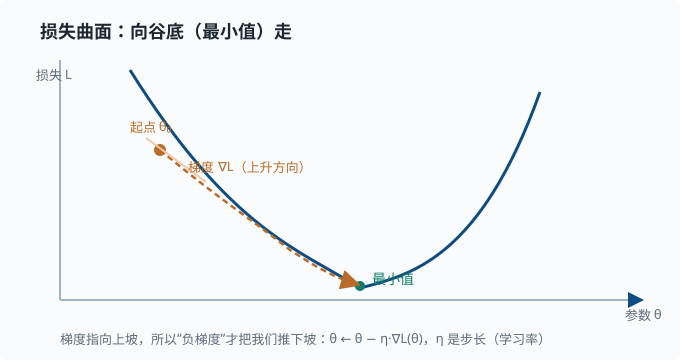

梯度与微分：学习是怎么发生的
目标：弄懂"下降"的数学。读完这一页，你能解释导数、偏导、梯度、链式法则、Jacobian，并理解深度学习里"反向传播"为什么本质上就是反复用链式法则算梯度。
为什么需要梯度
先讲一个你天天都在用、却没意识到的东西："变化有多快"。
- 一辆车开得多快？那是"位置"随时间变化的快慢。
- 一段坡有多陡？那是"高度"随水平距离变化的快慢。
- 一件商品销量随价格怎么变？那是"销量"随"价格"变化的快慢。
生活中到处都要回答"一个东西跟着另一个东西变，变得有多急"，也就是变化率。导数（微分）就是给这个直觉一个精确、可计算的形状：它告诉你，当输入稍微动一点点时，输出跟着动多少。本质上等于"输入变动一个微小单位的瞬间，输出变化的比例"。
这个工具为什么"万能"？因为只要有"某个结果跟某个因变量有关"，就能问"改变因变量时结果怎么变"，而**"怎么变"正是决定"往哪调更有利"的向导**。举个例子：假如你想让某个结果变小，就先看它随某个输入如何变化——如果结果是随输入增大而增大的，那就往减小的方向调；反过来就往增大的方向调。这个"顺着变化方向去调整"的思路，正是后面所谓"让结果变小"类问题的通用骨架。
$$ \text{损失 }L(\theta)\ \text{对参数 }\theta\text{ 的导数}\ =\ \text{“}\theta\text{ 动一点点，}L\text{ 变多少”} $$
$$ \text{顺梯度反方向走，}L\text{ 就会下降} $$
所以，当一个系统有一堆"可调节的旋钮"，我们要找"让某个目标（错误、成本）变小"的拧法时，导数和梯度就给出了方向性的答案：顺着让目标变小的方向去调。这个思路就叫梯度下降，它是许多"靠数据来调旋钮"的场景共同的骨架。下面这张图给出"损失地形 + 梯度方向 + 谷底"的整体画面：

导数：瞬时变化率
把上面的直觉落到一元函数 $f(x)$。我们在 $x_0$ 处问：当 $x$ 从 $x_0$ 稍微挪一点点（记为 $h$，趋近于 0），$f$ 跟着变多少？"变化量之比"即 $\frac{f(x_0+h)-f(x_0)}{h}$。当 $h$ 无限缩小时得到的那个极限，就叫导数：
$$ f'(x_0)=\lim_{h\to0}\frac{f(x_0+h)-f(x_0)}{h} $$
几何上，它是曲线在 $x_0$ 处切线的斜率。
常见导数公式，务必熟到脱口而出：
$$ \frac{d}{dx}[c]=0;\quad \frac{d}{dx}[x^n]=n,x^{n-1};\quad \frac{d}{dx}[e^x]=e^x;\quad \frac{d}{dx}[\ln x]=\frac1x $$
$$ \frac{d}{dx}[\sin x]=\cos x;\quad \frac{d}{dx}[a,f(x)]=a,f'(x);\quad \frac{d}{dx}[f+g]=f'+g' $$
两个非常常用的法则：
乘积法则：
$$ (fg)'=f'g+fg' $$
链式法则：
$$ \frac{d}{dx}\big[f(g(x))\big]=f'\big(g(x)\big)\cdot g'(x) $$
链式法则是整个深度学习的关键——反向传播就是它。先把它记牢。
深挖：为什么是乘积法则而非"各自求导再相乘"？对 $fg$ 来说，两边同时有一点改变，变化量既来自 $f$ 也来自 $g$，还来自两者同时变的二阶小量（可忽略），所以 $f'g+fg'$——一阶近似里要保留所有可能来源。
偏导数：多变量情形
当函数有多个输入 $f(x_1,x_2,\dots,x_n)$，我们只能在一个方向动。偏导数就是"固定其他变量，只看某个变量的导数"：
$$ \frac{\partial f}{\partial x_1}=\ \text{把 }x_2..x_n\text{ 当作常数，对 }x_1\text{ 求导} $$
例子 $f(x,y)=x^2+3xy$：
$$ \frac{\partial f}{\partial x}=2x+3y;\qquad \frac{\partial f}{\partial y}=3x $$
每个偏导只回答"沿这一个坐标轴动，函数怎么变"。
梯度 Gradient
把所有偏导排成一个向量，就是梯度，记作 $\nabla f$：
$$ \nabla f=\left[\frac{\partial f}{\partial x_1},,\frac{\partial f}{\partial x_2},,\dots,,\frac{\partial f}{\partial x_n}\right] $$
梯度的关键性质：
$$ \text{梯度指向函数上升最快的方向};\quad \text{负梯度指向下降最快的方向};\quad \text{梯度的大小}=\text{这个方向的陡峭程度} $$
这就是梯度下降的直接依据。一个直观但重要的观察：梯度垂直于等值线（因为在等值线上函数值不变，任何"往等值线方向"的移动都不改变函数值）。
链式法则：把复杂网络拆开
神经网络是一个函数嵌套：每层的输出进入下一层。用链式法则，我们可以把"最终损失对深层参数的导数"拆成一段段乘积。
假设
$$ \mathbf{z}=\mathbf{W}\mathbf{x}+\mathbf{b};\qquad \mathbf{a}=\sigma(\mathbf{z});\qquad L=\ell(\mathbf{a}) $$
那么
$$ \frac{\partial L}{\partial \mathbf{W}}=\frac{\partial L}{\partial\mathbf{a}}\cdot \frac{\partial\mathbf{a}}{\partial\mathbf{z}}\cdot \frac{\partial\mathbf{z}}{\partial\mathbf{W}} $$
反向传播做的，就是从 $\partial L/\partial\mathbf{a}$ 开始，从后往前逐层乘上这些局部导数。梯度就像"误差信号"在每一层逐段传递。
用一张简图看清"前向传值、反向传梯度"这对镜像过程：
flowchart TB
subgraph forward["前向：往前传值"]
F1["x"] --> F2["z = Wx + b"]
F2 --> F3["a = σ(z)"]
F3 --> F4["L = ℓ(a)"]
end
subgraph backward["反向：往回调梯度"]
B4["∂L/∂a"] --> B3["∂L/∂z = ∂L/∂a · σ'(z)"]
B3 --> B2["∂L/∂W = ∂L/∂z · xᵀ"]
end
F4 -.-> B4
先是脑海中建立这个图：
前向：输入 → 各层 → 损失
反向：损失 → 各层局部梯度 → 参数更新量
Jacobian：一阶偏导的矩阵
当输出也是向量时，一阶偏导排成一个矩阵，叫 Jacobian：
$$ J[i][j]=\frac{\partial f_i}{\partial x_j} $$
它把"输入的小变化"映射成"输出的小变化"：$\delta\mathbf{z}\approx J,\delta\mathbf{x}$。在深度学习里，多层网络的梯度传播常写成 Jacobian 的连乘。
两条形状规则值得记牢（以一个把长度 $n$ 的输入 $\mathbf{x}$ 映射成长度 $m$ 的输出 $\mathbf{z}$ 的层为例）：
- 该层的 Jacobian 是 $m\times n$ 矩阵——输出维度在前，输入维度在后。
- 反向传播时，上游传来长度 $m$ 的误差向量 $\mathbf{g}=\partial L/\partial\mathbf{z}$，往回传给输入要左乘 Jacobian：$\partial L/\partial\mathbf{x}=J^{\mathsf{T}}\mathbf{g}$，形状 $(n\times m)\cdot m=n$，正好对上。转置不是装饰，是让形状闭合的必然。
你不用手推每个 Jacobian 的元素，但"高维导数是矩阵、反向传播是转置左乘、形状必须闭合"这三个事实，是第 04 章反向传播的全部骨架。
梯度下降更新法则
最常见的更新：
$$ \theta\leftarrow\theta-\eta,\nabla L(\theta) $$
其中 $\eta$ 是学习率：
- $\eta$ 太小 → 学得慢。
- $\eta$ 太大 → 越过最低点、反复震荡甚至发散。
这个 $\eta$ 的选择是训练里最需要调的超参数之一。后面 03-05 评估与训练诊断 和深度学习章节会反复谈到。
动手：数值验证梯度
用"差分"近似验证解析导数是工程里的常用手段。注意用中心差分误差更小：
import numpy as np
def f(x):
return x**3 + 2*x
# 解析导数：f'(x) = 3x² + 2
def df(x):
return 3*x**2 + 2
x = 2.0
h = 1e-6
forward = (f(x + h) - f(x)) / h # 前向差分
central = (f(x + h) - f(x - h)) / (2*h) # 中心差分，误差更小
print("forward:", forward.round(7)) # ≈ 14.000001
print("central:", central.round(7)) # ≈ 14.000000
print("analytic:", df(x).round(7)) # 14.0
# 梯度下降：找 f 的最小值（一元演示）
# f(x) = (x - 2)²，最小值在 x = 2，f'(x) = 2(x - 2)
theta = 5.0
lr = 0.05
for _ in range(200):
theta -= lr * 2 * (theta - 2)
print("converged theta:", round(theta, 4)) # → 2.0，落在导数为 0 的谷底
思考题
- 为什么更新时用的是负梯度而不是正梯度？
- 链式法则和反向传播是什么关系？
- 学习率太大或太小时，训练曲线各会呈现什么样子？
- 梯度为 0 的点意味着什么？它一定是全局最小吗？
- 为什么数值验证梯度常用"中心差分"而不是简单的前向差分？
参考答案
- 梯度指向函数上升最快的方向；要让损失下降，必须朝其反方向（负梯度）走。
- 反向传播就是链式法则的系统化应用：从最终损失出发，把局部导数一层层向前（反向）相乘，得到每个参数的梯度。
- 学习率太小：损失缓慢下降，训练"爬得很慢"；学习率太大：容易越过最低点来回震荡，甚至发散（损失不降反升）。
- 梯度为 0 的点叫驻点（导数在该处"停住"了），它可能是局部最小、局部最大或鞍点（鞍点：某些方向看是谷底、另一些方向看是山顶，形状像马鞍；高维函数里大量驻点其实是鞍点）。要保证它是全局最小，需要函数具备凸性；对非凸函数，梯度为 0 并不能保证全局最优。
- 前向差分 $(f(x+h)-f(x))/h$ 的误差大约是 $O(h)$（还含一阶偏差），中心差分 $(f(x+h)-f(x-h))/(2h)$ 的误差大约是 $O(h^2)$——同样步长下中心差分更准，所以工程里用于"验证梯度是否正确"时优先选它。
下一步
- 想深入了解"怎么高效地走到最低点" → 01-07 最优化。
- 想看它在神经网络训练里的完整面貌 → 04 深度学习。
- 想懂贝叶斯与概率那边如何配合 → 01-04 贝叶斯视角。